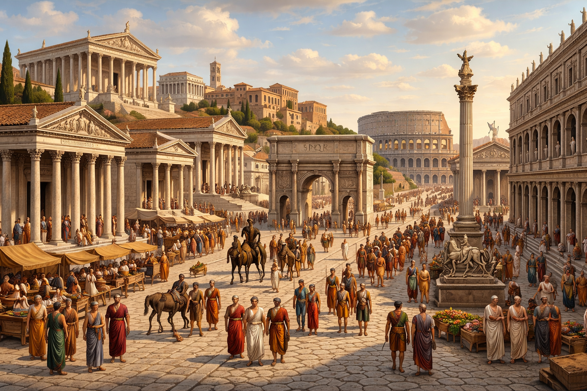

ca. 800 v.C. - 476
De Klassieke Oudheid begint met de opkomst van de Griekse beschaving. In deze periode ontwikkelen zich stadstaten, zoals Athene en Sparta, die elk hun eigen bestuur hebben. Sommige steden experimenteren met nieuwe bestuursvormen, zoals democratie, waarbij burgers inspraak krijgen in het bestuur.
Deze periode staat bekend om haar culturele bloei in de wetenschap, filosofie, kunst en literatuur. Ondanks onderlinge conflicten verspreidde de Griekse cultuur zich sterk, vooral na de veroveringen van Alexander de Grote. Hierdoor ontstond een wereld waarin Griekse ideeën en taal wijdverspreid raakten.

Terwijl de Griekse wereld zich ontwikkelde, groeide in Italië de stad Rome uit tot een belangrijke macht. Eerst werd Rome bestuurd als een republiek, waarin burgers en verkozen leiders een rol speelden. Geleidelijk breidde Rome zijn invloed uit door oorlogen en veroveringen rond de Middellandse Zee.
Tijdens deze uitbreiding nam Rome veel elementen over van de Griekse cultuur. Tegelijk kende Rome interne spanningen en burgeroorlogen. Deze onrust leidde uiteindelijk tot een verandering in bestuur, waarbij de macht meer en meer in handen kwam van één leider.
Na de periode van de republiek ontstond het Romeinse Keizerrijk, een enorm rijk dat grote delen van Europa, Noord-Afrika en het Midden-Oosten omvatte. Dit rijk bracht lange tijd stabiliteit (de Pax Romana) en zorgde voor eenheid door goed georganiseerde wegen, handel en bestuur.
Er ontstond een mengcultuur waarin Griekse en Romeinse elementen samenkwamen. In deze periode verspreidde ook het christendom zich, dat later een cruciale rol zou gaan spelen in de verdere geschiedenis van Europa.
In de latere fase kreeg het Romeinse Rijk te maken met politieke instabiliteit, economische moeilijkheden en druk door invallen van andere volkeren. De macht verschoof geleidelijk naar het oosten, terwijl het westelijke deel van het rijk verzwakte.
Uiteindelijk viel het West-Romeinse Rijk uiteen in 476. Dit moment markeert het einde van de Klassieke Oudheid en het begin van de middeleeuwen. Toch bleven veel elementen van de Grieks-Romeinse cultuur voortbestaan in latere samenlevingen.